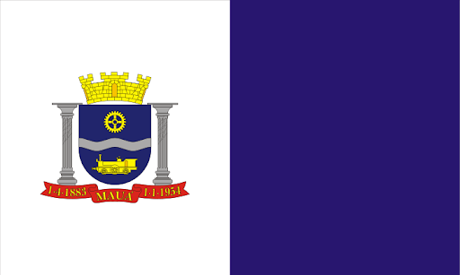

segue o hino do estado de Maua

Partindo da Nobreza
Do Barão de Mauá
Antevendo sua grandeza
Uma cidade iria brotar
Em terras virgens do Pilar
E agora aí está
Mauá, Mauá, Mauá
O teu povo é varonil
Incansável, lutador
Pelo progresso do Brasil
Desde a fina porcelana
E o granito natural
Todo o povo se irmana
Buscando um só ideal
Com as chaminés fumegantes
Fazendo sempre girar
Engrenagens mil rolantes
É a cidade a prosperar
E agora aí está
Mauá, Mauá, Mauá
O teu povo é varonil
Incansável lutador
Pelo progresso do Brasil
VOLTE AO SITE INICIO AQUI